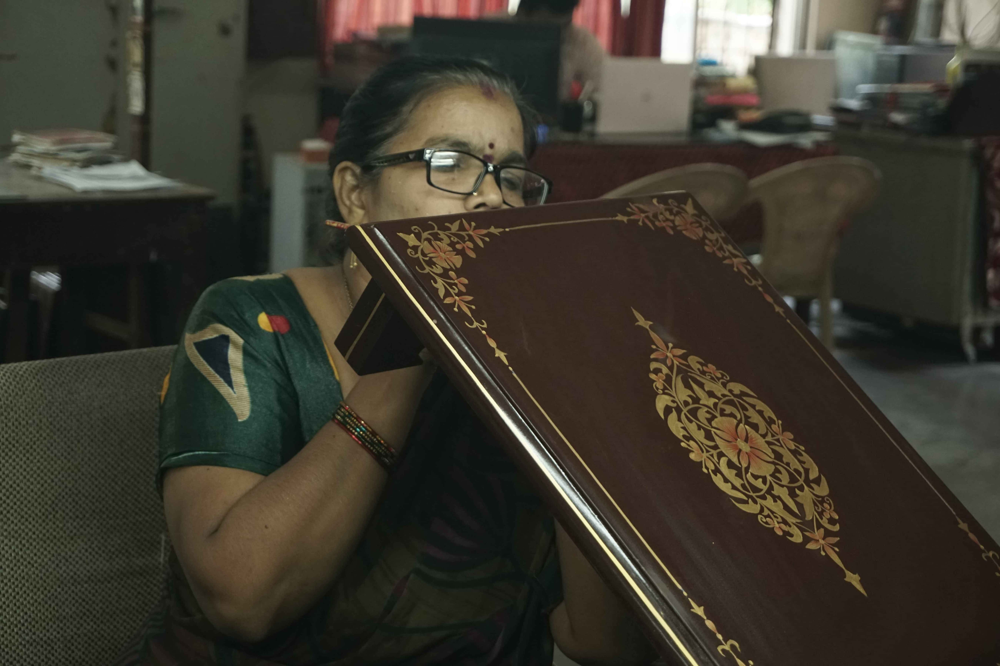

Gullakaari is an NGO that globalizes ethnic handicrafts to create sustainable livelihoods for tribal and rural artisans across India — preserving centuries of heritage, one craft at a time.
India's heart beats with rich ethnic traditions originating from its villages. Gullakaari began when a Father-Daughter duo visited tribal and rural communities and witnessed the exceptional skills of artisans crafting exquisite products with meticulous attention and genuine love.
We connect artisans with customers, co-create art, and raise awareness about endangered craft forms — while helping artisans build a sustainable, dignified livelihood free from exploitation by middlemen.
Our Story →
We provide equity and debt-free financial assistance to artisans through charitable contributions — no strings, no exploitation.
Our expert volunteers guide artisans in enhancing product quality, efficient delivery, and crafting functional modern products using traditional techniques.
We connect artisans directly with corporates and art lovers across the country and globe — eliminating middlemen and ensuring fair pay.
From the leather shadow puppets of Andhra Pradesh to the geometric embroidery of Tamil Nadu's Toda tribe — we work with living traditions at the edge of disappearance.
Translucent leather painting from Andhra Pradesh used for traditional shadow-puppet theatre.
Folk art of the Gond tribal community of Central India — intricate patterns, vibrant colors, 1400 years of history.
Geometric tribal art from Maharashtra depicting scenes of daily life using white pigment on earthen backdrops.
Traditional cloth-based scroll painting from Odisha and West Bengal narrating mythological tales.
Geometric needlework from Tamil Nadu's Toda tribe using the distinctive herringbone 'Pukhoor' stitch.
15th-century scroll painting from Telangana used for storytelling of Hindu epics.
"Working with Gullakaari has truly opened new doors for me. Before, we had to rely on middlemen who often underpaid us, but now our work reaches corporations and art lovers from across the country."
— Hakeem, Nirmal Artisan, Telangana
Engineer Leaves Tech Career To Save Endangered Indian Crafts, Earns Rs 50 Lakh in 2 Yrs
Read Article →Gullakaari — Revitalizing the artistic traditions of India and fostering self-sufficiency among artisans
View Profile →NGO working with rural artisans to revive the endangered Indian crafts across 9 states
Follow Us →Your donation directly supports artisans and ensures these art forms survive for future generations.